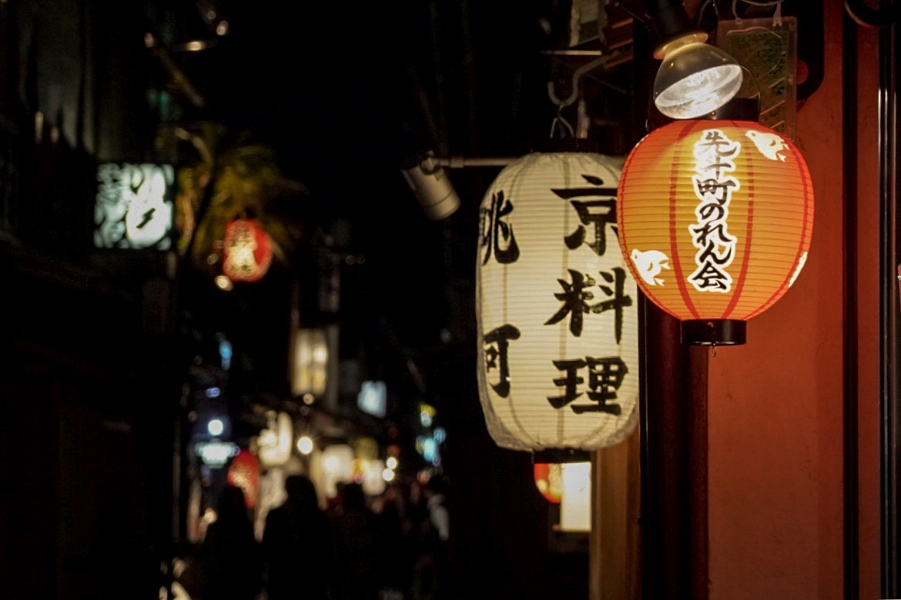

Introduction
Tokyo
Japan is an island nation in the Pacific Ocean with dense cities, imperial palaces, mountainous national parks and thousands of shrines and temples. Shinkansen bullet trains connect the main islands of Kyushu (with Okinawa's subtropical beaches), Honshu (home to Tokyo and Hiroshima’s atomic-bomb memorial) and Hokkaido (famous for skiing). Tokyo, the capital, is known for skyscrapers, shopping and pop culture.
Tips
- Currency: Yen
- Language: The primary language in Japan is Japanese.
- Electricity Socket: 100V AC electricity. Power outlets are usually for two, nonpolarized pins.
- Transportation: : Transportation in Japan is SO efficient. Getting a Japan Rail Pass is something we highly recommend.
- Visa: Holders of passports issued by 68 specific countries can travel to Japan visa-free for up to 90 days; this means that EU and US nationals, as well as Australian, Canadian citizens etc, can travel here without a visa.
- Safety: Japan is one of the world’s safest nations, but this doesn’t necessarily mean that you are immune from risk.
Landscapes
Sensō-ji/淺草寺
Sensō-ji is an ancient Buddhist temple located in Asakusa, Tokyo, Japan. It is Tokyo's oldest temple, and one of its most significant. Formerly associated with the Tendai sect of Buddhism, it became independent after World War II.
Address: 2 Chome-3-1 Asakusa, Taito City, Tokyo 111-0032, Japan
Hours: 645 AD
Phone: +81 3-3842-0181
Akihabara/秋葉原
Akihabara is a buzzing shopping hub famed for its electronics retailers, ranging from tiny stalls to vast department stores like Yodobashi Multimedia Akiba. Venues specializing in manga, anime, and video games include Tokyo Anime Center, for exhibits and souvenirs, and Radio Kaikan with 10 floors of toys, trading cards, and collectibles. Staff dressed as maids or butlers serve tea and desserts at nearby maid cafes.
Address: Akihabara, Taito City, Tokyo, Japan
Tokyo Station/東京駅
Mountainside Shinto shrine dating from 711 A.D. featuring a path with hundreds of traditional gates.
Address: 1 Chome Marunouchi, Chiyoda City, Tokyo, Japan
Hours: Open 24 hours
Website: tokyoinfo.com
Fushimi Inari Taisha/伏見稲荷大社
Mountainside Shinto shrine dating from 711 A.D. featuring a path with hundreds of traditional gates.
Address: 68 Fukakusa Yabunouchicho, Fushimi Ward, Kyoto, 612-0882, Japan
Hours: Open 24 hours
Phone: +81 75-641-7331
Jigokudani(Hell Valley)/登別地獄谷
Dramatic crater with boiling sulfuric hot springs, volcanic steam plumes & hiking paths.
Address: 無番地 Noboribetsuonsencho, Noboribetsu, Hokkaido 059-0551, Japan
Hours: 8AM-6PM
Website: japan-guide.com
Jigokudani(Hell Valley)/登別地獄谷(鬼火の路)
Dramatic crater with boiling sulfuric hot springs, volcanic steam plumes & hiking paths.
Address: 無番地 Noboribetsuonsencho, Noboribetsu, Hokkaido 059-0551, Japan
Hours: 8AM-6PM
Website: japan-guide.com
Noboribetsu Bear Park/のぼりべつクマ牧場
Noboribetsu Bear Park is located atop “Bear Mountain” that site in the deep forest of the Lake Kuttara area. The numbers of bears are now over a seventy, from only eight at the beginning,and happily ever after is the way they live now.
Address: 224 Noboribetsuonsencho, Noboribetsu, Hokkaido 059-0551, Japan
Hours: 8:30AM-4:30PM
Phone: +81 143-84-2225
Website: bearpark.jp
Otaru Canal/小樽運河
Flanked by restaurants, shops & vendors, this historic canal has a romantic, old-timey ambiance.
Address: 5 Minatomachi, Otaru, Hokkaido 047-0007, Japan
Hours: Open 24 hours

Otaru Music Box Museum/小樽オルゴール堂 本館
Otaru Music Box Museum is a music museum in the Otaru Orgel-do II building in Otaru, Japan. It includes various examples of music boxes as well as CDs that have music box-esque versions of various songs.
Address: 4-番１号 Sumiyoshicho, Otaru, Hokkaido 047-0015, Japan
Hours: 9AM-6PM
Phone: +81 134-34-3915